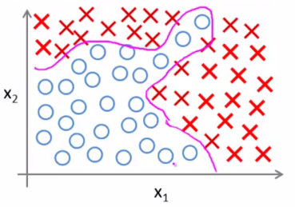
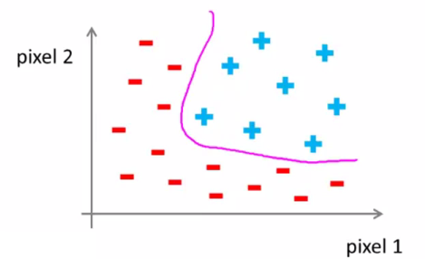
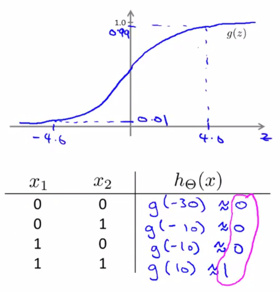

在学习了线性回归、逻辑回归算法之后，Andrew Ng在2010年的Coursera机器学习公开课上花了两个星期的时间来介绍神经网络算法，这和他2003年的斯坦福机器学习公开课只花了20分钟左右时间简单带过了神经网络算法形成了鲜明的对比，为什么对待同样的算法会有这么大的差别呢？这点我想可能主要是因为近年来计算机性能的显著提高以及分布式集群式的计算网络的实现大大提高了计算效率，使得原本多层神经网络算法的实现从技术和硬件角度成为了可能。那么今天我们就来正经的揭开神经网络学习算法的面纱吧，感谢【教育无边界字幕组】对Coursera原版内容的翻译，我可以很快的摘录一些课程中的内容而不需要从头进行自己翻译了，因此可以比较快速的完成这篇文章。
文章目录：
-非线性分类问题
首先我们来讨论为什么我们需要神经网络这样的算法？ 在处理分类问题时我们已经有了逻辑回归算法以及生成学习算法，为什么我们还要再使用这种叫作神经网络的算法呢？我们来看下面这个直观的分类问题的例子：
考虑这个监督学习分类问题，输入特征为x1和x2两项，目标值y为蓝色的圆形和红色的叉两种结果，这就是我们所拥有的训练集。如果利用逻辑回归来解决这个问题，我们需要构建的是包含很多非线性项的逻辑回归函数，因为从图上可以很明显的看出想要用一条直线来划分两种目标值是做不到的也是不合理的，我们所采用的函数可能看起来是下面这样样子：
其中g(z)仍然是我们所熟悉的sigmod函数：

理论上，g后面括号中的多项式参数足够多时，我们可以拟合出类似下图这样的曲线来将两种目标值区分开：

当我们的输入特征只有两项时，这种方法的确还算是可行，因为我们可以把x1和x2的所有组合都包含到我们的多项式参数中去。但是我们现实中遇到的机器学习问题往往都包含很多很多的输入特征值，就拿一开始所使用的房价预测问题来说，我们把问题的结果改一改，我们需要知道给定一个房子，在未来某段时间内能否被卖掉？这样就是一个分类问题了，结果有两种可能，一种是能被卖掉，一种是不能，而我们选用的样本的输入特征可以有房屋大小，房龄，装修情况，楼层…等等，或许有100个，也就是有{x1,x2,x3,…x100}个特征值，这些特征值就算仅写成二次项的形式，也有大约5000项，而且随着输入特征值的增加，所有二次项的数量将以O(n^2)数量级同步增加，所以当特征值很多时采用逻辑回归并不是一个好的方法，就算最近费了很大的劲拟合出来了，结果可能也是过拟合的。我们再来看一个例子，我们需要让计算机分辨出下面这辆车：
对于我们人类来说这太简单了，但是对于计算机来说为什么很难呢，就拿其中门把手这一个局部的数据来看，我们人类看到的是一个门把手，而计算机看到的是类似下面这样的表示像素数据的矩阵：
具体的说，在我们想要构建一个汽车的分类识别器的时候，我们需要的是像下面这样的大量图片作为训练样本，然后最后对给出的不在样本中的新的图片判断是否为汽车：
假设我们让我们的学习算法只选择图片上任意两点的像素强度值来进行学习，如下图所示，在坐标系中标出两个点的像素强度值，然后分别用“-”和“+”来给结果打上标签来区别训练样本是还是不是汽车：
用这样的方法标记了我们的训练样本集之后，我们会得到如下的样本分布图，而我们的学习算法要做的就是拟合出图中紫色的非线性的分界线来区分汽车和非汽车：

如示例图我们只取了两个像素点，而实际上一幅只有50X50像素的图片就有2500个点，在只考虑每个点的灰度值（0-255）的强度的情况下，输入特征就有2500个，而如果是RGB的彩色图的话就有7500个特征：
那么如果我们采用逻辑回归来处理这个问题的话，只包括所有的二次项我们也需要将近300万(2500*2500/2)个参数，这样的计算成本实在是太高了。于是我们就需要接下来要重点介绍的神经网络算法，它在处理复杂非线性分类问题上已经被证明是一个行之有效的好方法。
-神经元和人类大脑
神经网络是一个很古老的算法，它产生的目地是为了制造能够模拟人类大脑的机器。从某种意义上说如果我们 想要建立学习系统 那为什么不去模仿我们所认识的最神奇的学习机器—— 人类的大脑呢？神经网络逐渐兴起于二十世纪八九十年代，当时应用得非常广泛，但由于各种原因 在90年代的后期应用减少了，其中一个原因是神经网络算法是一个运算量偏大的算法，最近神经网络又东山再起了，计算机运行速度的加快使得大规模神经网络得以运行，如今神经网络对于许对应用来说是最先进的技术。
模拟人类的大脑，是指想制造出与人类大脑作用效果相同的机器 ，我们的大脑可以学会去以看而不是听的方式处理图像，学会处理我们的触觉，我们能学习数学，学着做微积分，而且大脑能处理各种不同的令人惊奇的事情，似乎如果你想要模仿它你得写很多不同的软件来模拟所有的功能。那么能不能假设所有处理这些不同事情的方法不需要用上千个不同的程序去实现，而是只需要一个单一的学习算法就可以了？ 我们来看一看我们的大脑是如何处理不同的事件的。如下图所示大脑的这一部分这一小片红色区域是听觉皮层，耳朵接收到声音信号并把声音信号传递给听觉皮层 我们才能听明白别人说的话。
神经系统做了有趣的实验，将耳朵到听觉皮层的连接切断，并且连接上从眼睛传来的视觉神经信号，结果表明，听觉皮层同样能够处理视觉信号：
同样的实验还有让触觉皮层“学”会了看：
从这个意义上说如果人体有同一块脑组织可以处理光、声或触觉信号，那么也许存在一种学习算法可以同时处理视觉、听觉和触觉，而不是需要运行上千个不同的程序或者上千个不同的算法来做这些大脑所完成的成千上万的美好事情，也许我们需要做的就是找出 一些近似的或 实际的大脑学习算法。
知道了神经网络是模仿大脑中的神经元或神经网络时发明的，那么我们就先来看一下神经元在大脑中是什么样子。我们的大脑中充满了如下图所示这样的神经元。
神经元是大脑中的细胞，其中有两点值得我们注意，一是神经元有像图上这样的整个细胞主体，二是神经元有 一定数量的输入神经，这些输入神经叫做树突，可以把它们想象成输入电线，它们接收来自其 神经元的信息，神经元的输出神经叫做轴突，这些输出神经是用来 给其他神经元传递信号或者传送信息。简而言之神经元是一个计算单元，它从输入神经接受一定数目的信息并做一些计算然后将结果通过它的轴突传送到其他结点或者大脑中的其他神经元。接下来我们就要学习怎么样在我们在机器学习里来模拟神经元的工作。
-神经网络算法建模
如下图所示，就是一个最简单的模拟神经元的逻辑单元，当中的黄颜色的圆形单元我们就可以将它想象成为类似神经元的东西，然后我们通过”树突”(连接x和黄色圆形的箭头)，传递一些输入信息(x)，然后通过”轴突”(连接黄色圆形和h(x)的箭头)来输出结果。
这其中的h(x)是我们的逻辑回归中所采用的sigmod函数:

有些时候在绘制上面这样的神经网络示意图的时候，在输入层还会增加一个x0结点，这个我们称之为偏置结点，因为我们总是令x0=1，所以有的时候我们也不必画出这个结点，这取决于要解决的实际问题，在术语的定义上，神经网络和之前的逻辑回归算法中有一点点区别，在神经网络中我们将sigmod函数称之为激励函数，将处理特征的参数θ称为权重。上面这个示意图只有一个神经元，我们接着来看稍微复杂一点，有多个神经元构成的神经网络：
这个神经网络的图形我们一般从左往右来年，一开始的一层我们有三个特征输入值，我们将这第一层称之为输入层，当中的一层我们有三个神经元a，当中这一层我们称之为隐藏层，最后一层称之为输出层，在更复杂的神经网络图中可能不此有一个隐藏层，但一般来讲输入和输出层都只有一个。接下来我们来看这个图形所呈现的计算步骤。
为了清晰的理解计算的过程，我们先来弄清楚一些数学标记的含义，首先是关于隐藏层的每个单元a的，a的上标(j)表示的是第几层，在这里我们只有一个隐藏层而且是第2层，所以j一般都取2，a的下标就是这一层的第几个神经元，而关于参数θ(也叫权重)在我们这里是一个矩阵，它的上标(j)表示的是从第j层到第j+1层的参数矩阵，而下标则表示的是矩阵中的第几行第几列的元素。于是我们得到这张图所表示的计算步骤：
一般来说，如果我们的神经网络在第j层有个单元，在j+1层有 个单元，那么我们的参数映射矩阵应该拥有的维度数量为，所以在述例子中我们有。上面这四个公式很重要，值得看三遍，力求弄清楚每一个标识的意义，并熟练的记住并在给定一个新的神经网络时可以写出同样格式的计算步骤。下在我们进一步来看怎么样用向量的表达方式来简化上面的公式，以便将来进行高效的向量和矩阵计算。
个单元，那么我们的参数映射矩阵应该拥有的维度数量为，所以在述例子中我们有。上面这四个公式很重要，值得看三遍，力求弄清楚每一个标识的意义，并熟练的记住并在给定一个新的神经网络时可以写出同样格式的计算步骤。下在我们进一步来看怎么样用向量的表达方式来简化上面的公式，以便将来进行高效的向量和矩阵计算。
如上面的图中所示，我们定义了向量z用来表示每一次的多项式计算过程，添加了偏置结点后，我们可以将从输入层到隐藏层，从隐藏层到输出层的多项式表达式都写成向量的形式，这种从输入层开始往输出层进行一层层表达的方式我们称之为前向传播。我们如果将其中单独的每个神经元拿出来看，它都像是一个我们之前所学的逻辑回归单元，而神经网络和之前的逻辑回归的最大不同是在输出层所使用的输入特征并不是直接的输入特征，输入的特征是经过隐藏层计算之后的结果。如果有兴趣可以给下面这样的神经网络图列一下每一层的计算步骤。
为了更形象更具体的理解神经网络，下面我们一起来学习几个简单的神经网络算法的例子。
-神经网络算法实例
考虑下面的问题,我们有二进制的输入特征 x1和x2，这两个特征要么取0要么取1，只有这两种取值。在这个例子中，为了简化理解我们只画出了两个结果为正的样本和两个结果为负的样本。
其实你可以想象实际遇到的问题可能是个更复杂的学习问题，我们可能在右上角有一堆正样本而在左下方有 一堆用圆圈表示的负样本，我们的目标就是想要学习一种非线性的决策边界来区分正负样本。
那么神经网络是如何计算的呢？我们就以一开始那幅简单图为例，我们需要学习得到的目标值y最终其实是x1异或x2，x1异或非x2，或者是x1异或x2后取反。
逻辑运算异或的理解很简单，就是x1和x2相同的时候y就是0，x1和x2不同的时候y就是1，与之相反的运算叫作同或也叫异或非，也就是x1和x2相同是y取1，当x1和x2不同是y取0。为了找到了个能拟合异或非运算的神经网络，我们先讲解一个比较简单的神经网络，它拟合了逻辑”且”运算，“且”运算指的是当且仅当x1和x2都为1的时候，输出结果y为1，否则为0。
那么我们怎么样得到一个具有单个神经元的神经网络来计算这个逻辑“且”呢？为了计算这一点，我们加上偏置结点：
之后我们给这个神经网络分配一些权重(也就是参数θ)：
那么可以得到我们的估计函数为。下面我们来看这一个单独的神经元是如何计算的，我们先画出g(z)的示意图，再列出x1和x2分别取不同值时候h(x)得到的数值。

从结果可以看出，当且仅当x1和x2都为1时，输出为1，我们的估计函数h(x)很好的模拟了“x1 And x2”的逻辑运算。我们再快速的来看逻辑“或”和逻辑“非”的例子，逻辑“或”运算是指当且仅当x1和x2都为0时，输出结果为0，否则为1。
逻辑“非”运算则只有一个输入x，输出结果和输入相反，就是x是0的时候输出为1，x为1的时候输出为0。
掌握了类似上面这些例子中的单个神经元的计算之后，我们就可以来看怎么样通过多层的神经网络来拟合复杂的运算，也就是一开始我们要实现的逻辑“异或非”运算。
这是一个标准的三层神经网络，一个输入层，一个隐藏层和一个输出层，其中隐藏层我们设置了两个神经元，分别进行了逻辑“且”运算和逻辑“且非”运算，在输出层进行了逻辑“或运算”，通过这样一个神经网络的拟合，我们从最后结果输出的真值表中可以看到，当且仅当x1和x2相同是，输出结果为1，表明输出的结果正好拟合了我们的目标逻辑“异或非”运算。这个例子就是关于神经网络可以解决复杂非线性分类问题或是说可以拟合复杂非线性边界的典型例子。
-多类别分类问题
到目前为止我们介绍的神经网络例子都只是能够处理二元分类问题，而实际应用过程中很多时候我们要解决的问题的分类不止有两个，而通常结果都是有很多个的，比如我们的手写识别，智能收件箱等应用都有多个类别需要我们进行区分。那么神经网络如何来处理类似这样的多类别分类问题呢？我们接着来看下面这个例子，这个问题需要我们根据给定的图片集合训练出一个机器学习算法，可以区分出图片中的内容是行人，汽车，摩托车还是卡车。
对于这样一个问题，我们的做法是建立一个具有四个输出单元的神经网络，也就是说此时神经网络的输出是一个四维向量。向量有四个元素，我们要做的就是对第一个元素判断是否为行人，第二个元素判断是否为汽车，第三个元素是否为摩托车，第四个元素判断是否为卡车。所以实际上这和我们讨论逻辑回归问题时，有多个类别输出的Softmax算法结果是一样的，只不过这里我们用向量的形式来表述最后的输出。
通过这样的方式我们就可能使用神经网络的方法来得到我们最终想要拟合的估计函数h(x)，而这里h(x)的输出是表述多种不同类别的向量。
-反向传播算法
通过上面这些内容的学习，我们应该对神经网络的结构以及神经网络是如何拟合出非线性边界来处理分类问题的原理有了一定的了解，对于逻辑“异或非”运算的例子中我们所赋予的参数或者说权重都是基于我们的对逻辑运算经验直接给定的，而实际应用于复杂的问题的时候，我们需要做的是通过给定的训练集合需要让算法自动的得到最优的参数，也就是神经网络图中连接各个结点之间的权重。下面我们就开始学习一种在给定训练集下为神经网络拟合参数的算法。正如之前线性回归和逻辑回归问题中一样，我们需要引入评价函数。假设我们有如下所示神经网络：
我们用L表示神经网络的总层数，那么对应于这个神经网络图，我们的L=4。我们用表示第l层的神经元数量，这其中并没有包含偏置结点。对于逻辑回归，我们的评价函数是如下形式：
而对应于我们有K个输出单元的神经网络，评价函数是上面这个只有二元分类问题评价函数的一般化形式：
于是我们要做的就是用算法来最优化这个评价函数。为了使用梯度下降法或是别的牛顿算法等其它的优化算法，我们需要应用和计算的是以下两个表达式：
第一个评价函数的公式我们已经得了，下面要做的重点就是求评价函数的偏导数。只样的我们从假设训练样本集合只包含一个训练样本(x,y)开始着手。首先我们采用前向传播的方法写出每一层对应的向量化之后的表达式：
为了计算导数项，我们采用一种叫作反向传播的算法。反向传播从直观上讲就是对应每一个结点，我们计算下面这项：
用表示第l层第j个结点的误差，比如对于第四层输出层，我们的误差计算是：
把公式里的每一项都写成向量化的形式的话，可以得到的是：。接着我们向前推导出神经网络里前几层的误差项的表达式：
其中运算符号”.*”表示的是点积的意思。反向传播算法正是得名于我们这样从输出层开始向前反向的计算误差值的过程。有了这些误差项之后，我们就可以得到我们对评价函数求偏导数的结果，这是一个极其复杂的推导过程，这里就先略去，最终我们会得到的偏导数实际上就是下面这样的：。
对于我们的m个训练样本集合我们的做法如下：
首先我们初始化所有的误差项为0，这里三角形符号Δ 是大写的δ。接下来我们将遍历我们的训练集，我们这样写，写成 For i = 1 to m 对于第 i 个循环而言 我们将取训练样本 (x(i), y(i))，在循环里我们要做的第一件事是设定a(1) 也就是输入层的激励函数，设定它等于x(i)，x(i) 是我们第 i 个训练样本 输入值，接下来我们运用正向传播来计算第二层的激励值，然后是第三层，第四层一直这样到最后一层 L层，再接下来我们将用这个样本的输出值 y(i) 来计算这个输出值所对应的误差项 δ(L) 所以 δ(L) 就是假设输出减去实际目标输出，接着我们运用反向传播算法 来计算 δ(L-1) δ(L-2) 一直这样直到 δ(2)，这里没有 δ(1) 因为我们不需要对输入层考虑误差项，最后我们将用这些大写的 Δ 来累积我们在前面写好的偏导数项。跳出循环后我们可以得到最终的偏导数项为：
之后我们就可以将这个偏导数应用于梯度下降算法或其它优化算法中。这就是反向传播算法，当中的细节错综复杂，我们可以自己试着进行推导，暂时无法深究当中细节关系也不大，因为对算法理论上的证明不影响我们对算法应用本身的学习，思路上要清晰的认识我们要做的是什么，比如这里的反向传播算法，我们最终要做的就是优化各个结点连接的权重值，而优化的过程我们采用的是从输出层向输入层反向优化的过程，当中用到的数学方法最重要的一点是对我们的一般化之后的逻辑回归的评价函数作偏导数的计算。
对很多人来说，当第一次看到这种算法时第一印象通常是哇哦这个算法需要那么多繁杂的步骤，简直是太复杂了，实在不知道这些步骤到底应该如何合在一起使用，就好像一个黑箱里面充满了复杂的步骤，如果你对反向传播算法也有这种感受的话，这其实是正常的。相比于线性回归算法和逻辑回归算法而言，从数学的角度上讲反向传播算法似乎并不简洁，所以就算对于反向传播算法究竟是如何执行的并没有一个很直观的理解，相信今后通过一些实际的应用应该可以感受到 反向传播算法具体是如何实现的并可以逐渐的掌握这种算法。
为了更好的理解反向传播算法，我们再来仔细研究一下前向传播的原理。
具体来讲，在进行前向传播时，我们可以用一个具体的例子说明，假如说训练样本{x(i)，y(i)}， 那么这里的 x(i) 将被传入输入层，因此这里就是 x(i)1 和 x(i)2 这是我们输入层的值，那么当我们进行前向传播，传播到第一个隐藏层时，我们的做法是算出 z(2)1和 z(2)2，这两个值是输入单元的加权总和，接下来我们将S型的逻辑函数和S型的激励函数应用到z值上得到 a(2)1 和 a(2)2 的值，然后再做一次前向传播，这里的 z(3)1 应用S型的逻辑函数和激励函数得到 a(3)1，类似这样进行下去最后我们得到 z(4)1应用激励函数得到 a(4)1这也是这个网络的输出单元的值。 如果你仔细看这里的计算 关注桃红色这一层的隐藏单元，其输入值为前一层激励值的加权总和，也就是 ，这就是前向传播的过程。 事实上正如我们后面将会看到的，反向传播的做法其过程非常类似于此，只有计算的方向不同而已，与这里前向传播的方向从左至右，不同的是 反向传播的算法中计算的方向是从右往左的，但计算的过程是完全类似的。在详细的讲解反向传播之前我们先把目光投向评价函数：
如图所示的评价函数是只有一个输出单元的情况，如果有K个输出单元就只要对所有输出单元进行一次求和运算。和前面介绍前向传播一致我们使用训练样本为{x(i)，y(i)}，如果不考虑最后公式中的正则化项，然后只针对这一个样本对评价函数进行简化，我们可以得到：
这个评价函数所扮演的角色和线性回归中的平方差类似，你可以将其想像成神经网络输出值与实际值之间的差的平方，这个函数的作用就是表示我们的估计函数h(x)是否能够正确的计算出输出值y，也就是估计值与实际值的接近程度。现在我们来看反向传播是怎么做的。
对于输出层，如果我们设置δ项，比如说 δ(4)1 等于 y(i) 假设我们进行第i个训练样本的正向传播和反向传播，那么应该等 y(i) 减去 a(4)1 因此这实际是两者的偏差也就是 y 的实际值减去预测值得到的差值，这样我们就算出了δ(4)1 的值，接着我们对这些值进行反向传播，计算出前一层的 δ 项的值，那么这里我们计算出 δ(3)1 和 δ(3)2 ，然后同样的再进行下一层的反向传播，这一次计算出 δ(2)1 以及 δ(2)2，举个例子，我们具体来看一个δ(2)2是如何计算的：
δ(2)2 的值等于桃红色的这条权值 θ(2)12 乘以δ(3)1 加上下一个是用红色标记的权值θ(2)22 乘上δ(3)2， 所以简单地说就是红色的权值乘以它指向的值加上桃红色的权值乘以它指向的值这样我们就得到了上一层的δ值，对于偏置结点的值也可以根据具体情况选择计算进来还是忽略掉。
反向传播算法到这里算是介绍完了，不管有没有清晰的理解吧，事实证明这是一个可行的比较好的神经网络对权值进行优化的算法，在后续有机会实际应用中我们再来更直观的体验这个神奇的算法吧。
-梯度校验
前面的这些内容我们介绍了神经网络算法，讲到了前向传播和反向传播，以及如何计算神经网络评价函数的导数，但反向传播作为一个有很多细节的算法，在实现的时候会有点复杂，而且有一个不好的方面是在实现反向传播时会遇到很多细小的错误，所以如果你把它和梯度下降法或者其他优化算法一起运行时，可能看起来它运行正常并且你的评价函数J 最后可能在每次梯度下降法迭代时都会减小，即使在实现反向传播时有一些小错误可能也会检查不出来，所以它看起来是 J(θ)在减小，但是可能你最后得到的神经网络的结果是错误的， 而这样的错误是由一些小错误导致的，那我们应该怎么办呢? 有一个想法叫梯度检验 (Gradient Checking) 可以解决基本这样的问题。
梯度校验的思路是这样的，考虑下面这个例子，假如我们有一个 函数J(θ) ，并且有个值 θ，在这个例子中θ只是一个实数，如果说我们想估计这个函数在这一点的导数，那么可以从图形上直观的看出这个导数等于这个点对应蓝色切线的斜率，下面我们用这样的方法来计算近似的导数，我们先计算θ+ε 这个点的值，然后计算θ-ε 这个点的值，然后把两个点用一条红色的直线连起来，我们就可以用红色线的斜率来作为我们导数的近似值，当然真正的导数是蓝色线的斜率，在数学上这条红线的斜率等于这个垂直的高度除以这个这个水平的宽度所以上面这点是J(θ+ε) 这点是J(Θ-ε) 垂直方向上的 差是J(θ+ε)-J(θ+ε) 也就是说 水平的距离就是2ε，那么最后我们得到近似的导数是这样的 。通常我们给ε取很小的值，比如可能取10的-4次方，ε的取值在一个很大范围内都是可行的，实际上如果让ε非常小，那么数学上实际上就是导数，也就是变成了函数在这点上准确的斜率。
以上是当θ是实数的情况，对于我们神经网络中我们的θ是一个由各个结点的权重矩阵展开的向量，那么对于这样的θ我们可以作如下的计算近似的导数：
然后通过对比这些近似的导数值与我们在算法中实际求得的导数值差异的大小来进行校验。
-参数初始化
和之前所采用的线性回归或是逻辑回归算法一样，在实际执行我们的学习算法之前我们都需要对我们的参数θ进行初始化，以便接下来通过梯度下降算法也好别的更高级的算法也好可以不断的调整θ值来使得我们的评价函数J(θ)不断的减小，在线性回归和逻辑回归中我们可以将所有的θ都初始化为0，非常的简单，那么在神经网络中是否也可以初始化为0呢？答案显然是否定的。
以训练上图这个神经网络为例，照之前所说将所有变量初始化为0，如果是这样的话具体来说就是，初始化图蓝色，红色，绿色的权重都为0，那么这就意味着两个隐藏单元a1，a2 是两个相同的关于输入的函数，这样一来对每个样本进行训练最后a(2)1与a(2)2结果必然相等。而由于这些权重相同，同样可以证明这些 δ 值也相同，具体地说 δ(2)1=δ(2)2，δ(2)1=δ(2)2 ，同时你更深入地挖掘一下，我们不难得出这些变量对参数的偏导数也是相同的，这也就意味着一旦更新梯度下降方， 两条蓝色权重的值在最后将相等，即使权重现在不都为0 但参数的值最后也互为相等，红色和绿色也是如此，那么即使经过一次循环后，两个隐藏单元仍然是两个完全相同的输入函数，因此 a(1)2 仍然等于 a(2)2 ，一直持续运行梯度下降它们还是相等，这也就意味着这个神经网络的确不能计算更有价值的东西，这样便阻止了神经网络学习出更有价值的信息。
为了解决这个问题，神经网络变量初始化的方式采用随机初始化，所以我们需要做的是对θ的每个值 进行初始化范围在 -ɛ 到 +ɛ 之间，这里的这个 ε 和在进行梯度检查中用的不是一回事。总结来说，为了训练神经网络，应该对权重进行随机初始化为-ε到+ε间的接近于0的小数，然后进行反向传播，执行梯度检查，使用梯度下降或者使用高级的优化算法试着使代价函数J 达到最小。
-总结
通过上面一个系统的介绍我们算是把神经网络算法的基本知识都学习完毕了，在这里再将这些零碎的知识点做一个总结。当我们要处理一个非线性分类问题的时候，我们可以选择使用神经网络算法，那么第一步我们要做的就是搭建我们的神经网络架构图：
其中输入层的结点个数等于我们的输入特征数量，输出层的结点个数等于我们需要分类的类别数量。对于隐藏层的选择则是我们可以自己根据实际问题进行选定的，一般来说要满足以下几点，隐藏层的数量大于等于一个，如果有多个隐藏层则每个隐藏层的神经元数量应该相等，理论上来讲隐藏层的神经元越多学习效果越好，一般来说可以和输入特征的多少相匹配，具体数目选择上稍大于输入结点。在确定了神经网络的结构之后，我们就可以按照以下步骤进行训练了：